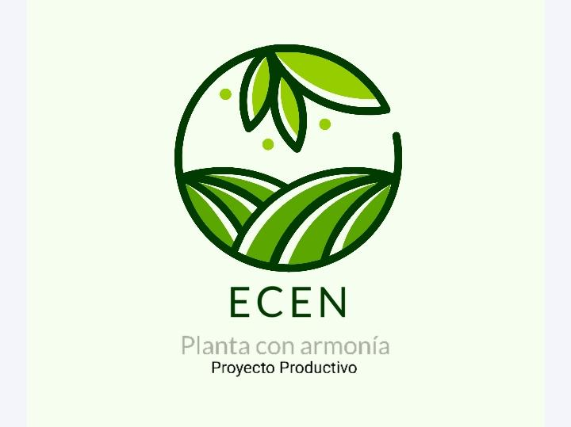

|  | IntroducciónPresentamos este proyecto a base de la propia vivencia que encontramos en la ciudad, nuestra propia problemática ambiental y no solo eso; sino la pérdida de nuestra cultura, en Tuluá encontramos diferentes industrias como las azucareras que se han extendido por lo largo de la región generando una pérdida de la biodiversidad propia de la ciudad, esto ha generado que plantas medicinales que encontrábamos antes, no sea posible encontrarlas y sean traídas desde otras regiones. |
ProblemáticaFrente al hecho que las industrias se han expandido a lo largo de la región hemos encontrado hechos que han perjudicado nuestro ecosistema como la pérdida de la flora y también de la fauna de la región que son importantes para la producción de diferentes recursos; como lo son las aves para la reproducción y polinización de nuestras plantas. |